final_project
b03801053劉倢如
2018/1/7
前言：PM2.5是什麼?為什麼會選擇PM2.5?
<=2.5um的粒子就是PM2.5，通稱為細懸浮微粒，因為過於微小，因此進入人體後不容易出來，因此會對人體的肺部、心血管產生比較大的傷害
每逢秋冬季節，東北季風帶來的境外空氣污染，再加上台灣本土的空氣污染，造成中南部地區多日空氣品質狀況達紅色警戒，而台灣本地的空污的原兇究竟是來自哪裡？
從新聞媒體對中部地區居民的訪問得知，火力發電廠就在附近，空氣品質很不好，很擔心#環團也將空汙主因指向中部火力發電廠，因此我們從https://pm25.lass-ne###t.org/zh_tw/ PM2.5開放資料網站爬下了2017年10~12月份的PM2.5資料來看看這三個月的空氣品質狀況
library(leaflet)
library(readxl)
library(dplyr)##
## Attaching package: 'dplyr'## The following objects are masked from 'package:stats':
##
## filter, lag## The following objects are masked from 'package:base':
##
## intersect, setdiff, setequal, unionlibrary(openair)
library(dygraphs)
library(ggmap)## Loading required package: ggplot2## Google Maps API Terms of Service: http://developers.google.com/maps/terms.## Please cite ggmap if you use it: see citation("ggmap") for details.library(mapproj)## Loading required package: mapslibrary(maps)
library(ggplot2)
library(plotly)##
## Attaching package: 'plotly'## The following object is masked from 'package:ggmap':
##
## wind## The following object is masked from 'package:ggplot2':
##
## last_plot## The following object is masked from 'package:stats':
##
## filter## The following object is masked from 'package:graphics':
##
## layoutwsite<-read_xlsx("whole.xlsx")
d<-data.frame(wsite$ID,wsite$lat,wsite$lon)
d$nID<-substr(d$wsite.ID,9,12)
names(d)<-c("ID","lat","lon","nID")
map <- get_map(location = c(lon = 120.573, lat = 24.266),
zoom = 11, language = "zh-TW")## Source : https://maps.googleapis.com/maps/api/staticmap?center=24.266,120.573&zoom=11&size=640x640&scale=2&maptype=terrain&language=zh-TWggmap(map, extent = "normal") +
geom_point(aes(x=d$lon, y=d$lat) ,colour="pink", size=4,data = d)+
geom_text(data = d,aes(x=lon,y=lat,label=d$nID),size=2.6,colour="firebrick")+
scale_colour_discrete(l = 45)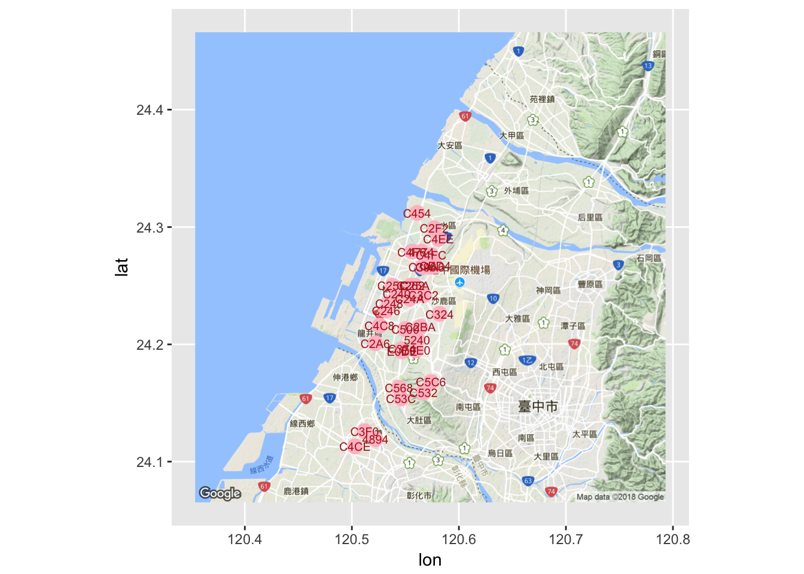
dateplot<-function(x){
fname<-paste0(x,".csv")
d <- read.csv(fname, header=TRUE)
d$newdate <- d$date
d$newtime<- d$time
d$finaldate<- paste0(d$newdate," ",d$newtime)
dn <- select(d,gps_lat,gps_lon,s_d0,finaldate)
tmp <- data.frame(dn$finaldate,dn$s_d0,dn$gps_lat,dn$gps_lon)
colnames(tmp) <- c("date","pm25","lat","lon")
tmp$date <- as.POSIXct(strptime(tmp$date, format= "%Y-%m-%d %H:%M:%S", "GMT"))
return (calendarPlot(tmp,main = paste("PM2.5 in 2017 from 10~12 month at site",x),key.header="AQI value", digits = 20,pollutant = "pm25",annotate = "date",year = 2017,breaks = c(0,15.4,35.4,54.4,150.4,250.4,350.4), labels = c("0.0 - 15.4","15.5 - 35.4","35.5 - 54.4","54.5 - 150.4","150.5 - 250.4",">=250.5")
,cols = c("Green", "Yellow", "Orange", "Red", "Purple","darkmagenta")))
}datetable<-function(x){
fname<-paste0(x,".csv")
d <- read.csv(fname, header=TRUE)
d$newdate <- d$date
d$newtime<- d$time
d$finaldate<- paste0(d$newdate," ",d$newtime)
dn <- select(d,gps_lat,gps_lon,s_d0,finaldate)
tmp <- data.frame(dn$finaldate,dn$s_d0,dn$gps_lat,dn$gps_lon)
colnames(tmp) <- c("date","pm25","lat","lon")
tmp$date <- as.POSIXct(strptime(tmp$date, format= "%Y-%m-%d %H:%M:%S", "GMT"))
tmp$nmonth<-substr(tmp$date,6,7)
tmp$ndate<-substr(tmp$date,9,10)
tmp$nhour<-substr(tmp$date,12,13)
tmp$nmonth<-as.numeric(tmp$nmonth)
tmp$nhour<-as.numeric(tmp$nhour)
tmp$ndate<-as.numeric(tmp$ndate)
tmp$pm25<-as.numeric(tmp$pm25)
return(tmp)
}distin<-function(x){
for(j in c(10:12)){
cg=0
cy=0
co=0
cr=0
cp=0
cb=0
if(j==10){
for(i in c(1:31)){
n<-select(x,pm25,ndate,nmonth)%>%
filter(nmonth==j & ndate==i)
value <- summarise(n,mean(pm25))
if(value=="NaN"){next}
else{
if (value <= 15.4){
cg = cg+1
}else if(value<=35.4){
cy = cy+1
}else if(value<=54.4){
co = co+1
}else if(value<=150.4){
cr = cr+1
}else if(value<=250.4)
{ cp = cp+1
}else{
cb = cb+1
}
df<-data.frame(cg,cy,co,cr,cp,cb)
}
}
}
else if(j==11){for(i in c(1:30)){
n<-select(x,pm25,ndate,nmonth)%>%
filter(nmonth==j & ndate==i)
value <- summarise(n,mean(pm25))
if(value=="NaN"){next}
else{
if (value <= 15.4){
cg = cg+1
}else if(value<=35.4){
cy = cy+1
}else if(value<=54.4){
co = co+1
}else if(value<=150.4){
cr = cr+1
}else if(value<=250.4)
{ cp = cp+1
}else{
cb = cb+1
}
}
df1<-data.frame(cg,cy,co,cr,cp,cb)}
}
else{
for(i in c(1:31)){
n<-select(x,pm25,ndate,nmonth)%>%
filter(nmonth==j & ndate==i)
value <- summarise(n,mean(pm25))
if(value=="NaN"){next}
else{
if (value <= 15.4){
cg = cg+1
}else if(value<=35.4){
cy = cy+1
}else if(value<=54.4){
co = co+1
}else if(value<=150.4){
cr = cr+1
}else if(value<=250.4)
{ cp = cp+1
}else{
cb = cb+1
}
}
df2<-data.frame(cg,cy,co,cr,cp,cb)}
}
}
new <- rbind(df,df1,df2)
return(new)
}name<-function(b){rownames(b) <- c(10,11,12)
colnames(b) <- c("良好","普通","對敏感族群不健康","對所有族群不健康","非常不健康","危害")
return(b)}b = distin(datetable("74DA3895C4C8"))
name(b)## 良好 普通 對敏感族群不健康 對所有族群不健康 非常不健康 危害
## 10 4 18 8 1 0 0
## 11 4 20 3 3 0 0
## 12 2 15 8 6 0 0dateplot("74DA3895C4C8")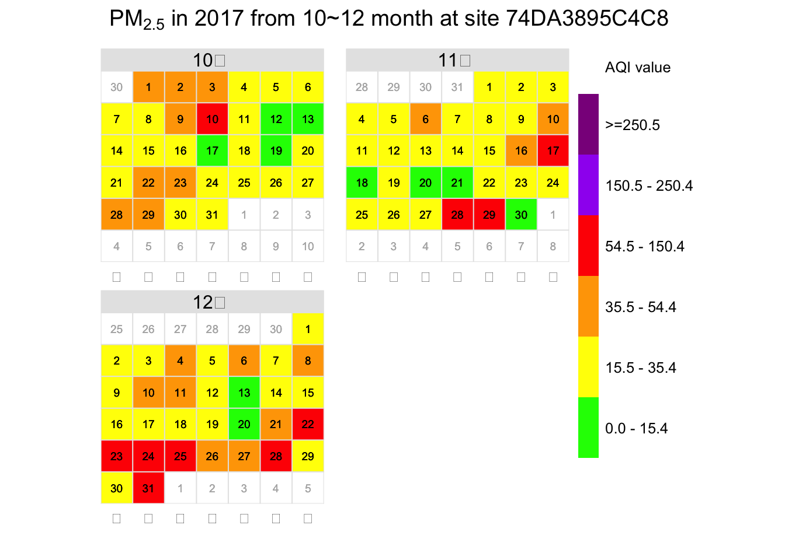
b = distin(datetable("74DA3895C4A6"))
name(b)## 良好 普通 對敏感族群不健康 對所有族群不健康 非常不健康 危害
## 10 4 13 7 1 0 0
## 11 5 19 4 2 0 0
## 12 3 15 8 1 0 0dateplot("74DA3895C4A6")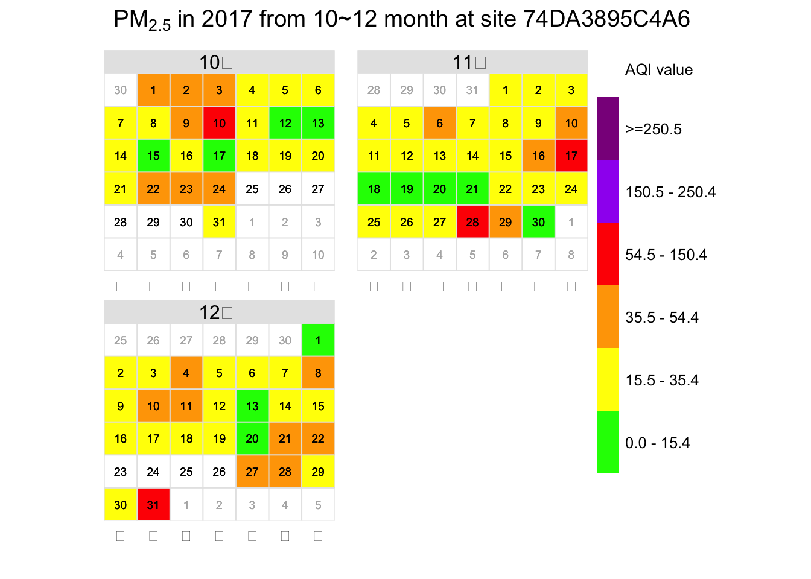
b = distin(datetable("74DA3895C248"))
name(b)## 良好 普通 對敏感族群不健康 對所有族群不健康 非常不健康 危害
## 10 2 18 10 1 0 0
## 11 3 19 6 2 0 0
## 12 1 13 12 5 0 0dateplot("74DA3895C248")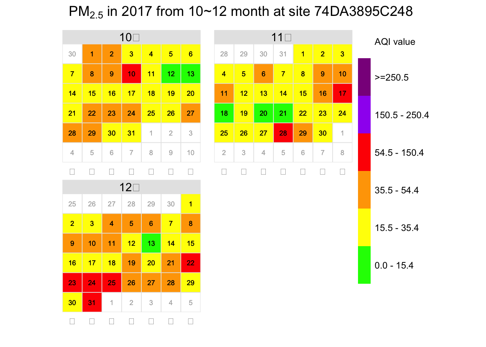
b = distin(datetable("74DA3895C4F4"))
name(b)## 良好 普通 對敏感族群不健康 對所有族群不健康 非常不健康 危害
## 10 6 17 8 0 0 0
## 11 6 19 4 1 0 0
## 12 5 16 8 2 0 0dateplot("74DA3895C4F4")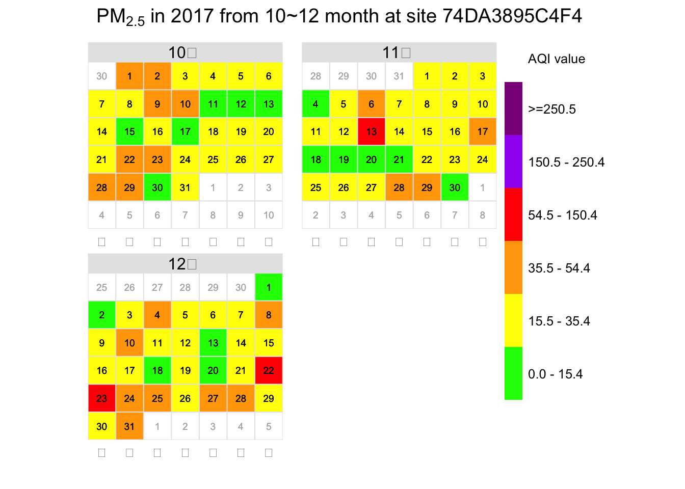
b = distin(datetable("74DA3895C4EE"))
name(b)## 良好 普通 對敏感族群不健康 對所有族群不健康 非常不健康 危害
## 10 1 16 8 1 0 0
## 11 1 20 6 2 0 0
## 12 1 14 12 4 0 0dateplot("74DA3895C4EE")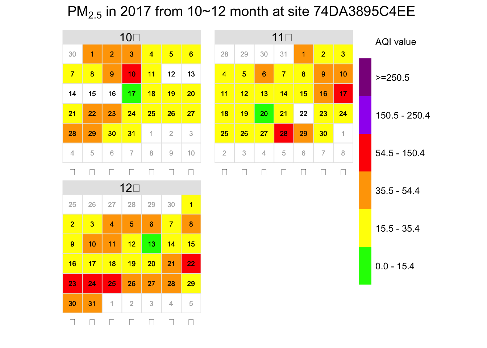
b = distin(datetable("74DA3895C4FC"))
name(b)## 良好 普通 對敏感族群不健康 對所有族群不健康 非常不健康 危害
## 10 3 20 7 1 0 0
## 11 3 19 4 2 0 0
## 12 2 17 7 4 0 0dateplot("74DA3895C4FC")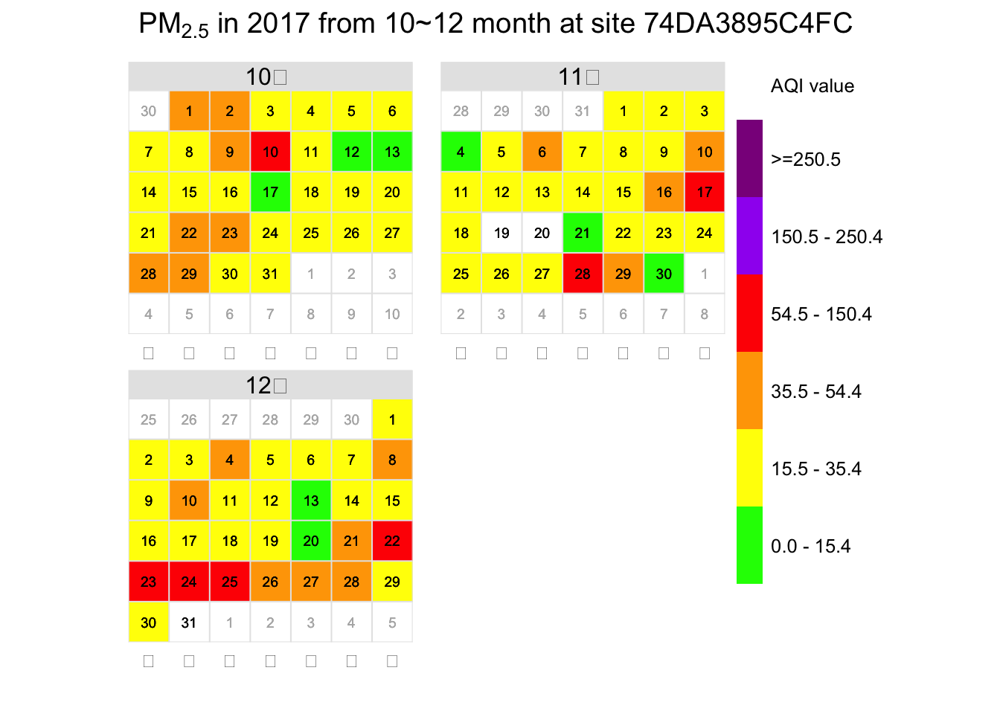
b = distin(datetable("74DA3895C4F6"))
name(b)## 良好 普通 對敏感族群不健康 對所有族群不健康 非常不健康 危害
## 10 2 17 10 2 0 0
## 11 1 20 7 2 0 0
## 12 0 12 12 7 0 0dateplot("74DA3895C4F6")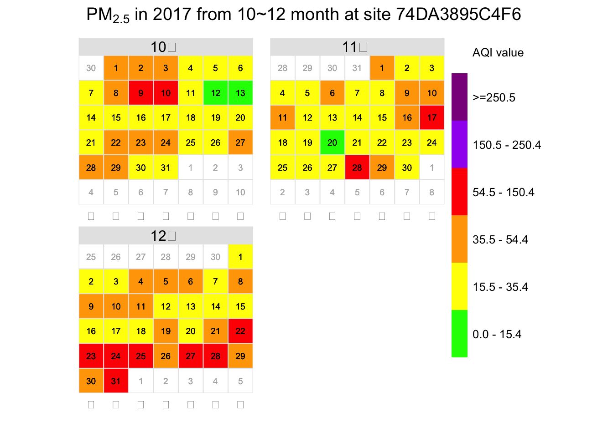
b = distin(datetable("74DA3895C25C"))
name(b)## 良好 普通 對敏感族群不健康 對所有族群不健康 非常不健康 危害
## 10 3 20 7 1 0 0
## 11 5 20 3 2 0 0
## 12 2 15 10 4 0 0dateplot("74DA3895C25C")
b = distin(datetable("74DA3895C240"))
name(b)## 良好 普通 對敏感族群不健康 對所有族群不健康 非常不健康 危害
## 10 3 18 9 1 0 0
## 11 3 21 4 2 0 0
## 12 1 15 11 4 0 0dateplot("74DA3895C240")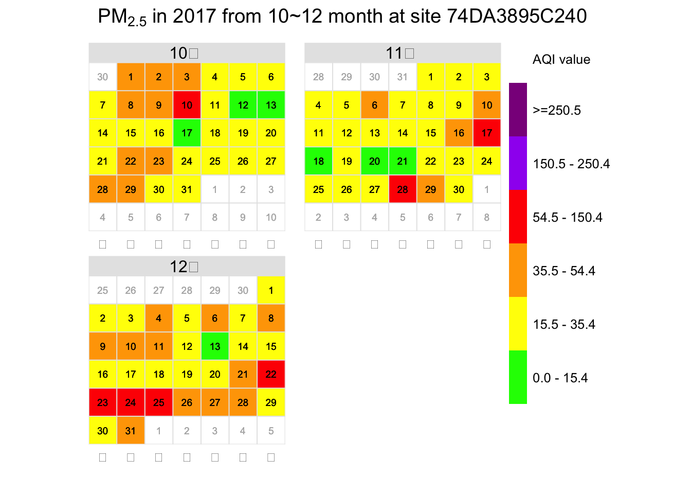
b = distin(datetable("74DA3895C246"))
name(b)## 良好 普通 對敏感族群不健康 對所有族群不健康 非常不健康 危害
## 10 4 14 12 1 0 0
## 11 1 21 5 3 0 0
## 12 0 9 12 6 0 0dateplot("74DA3895C246")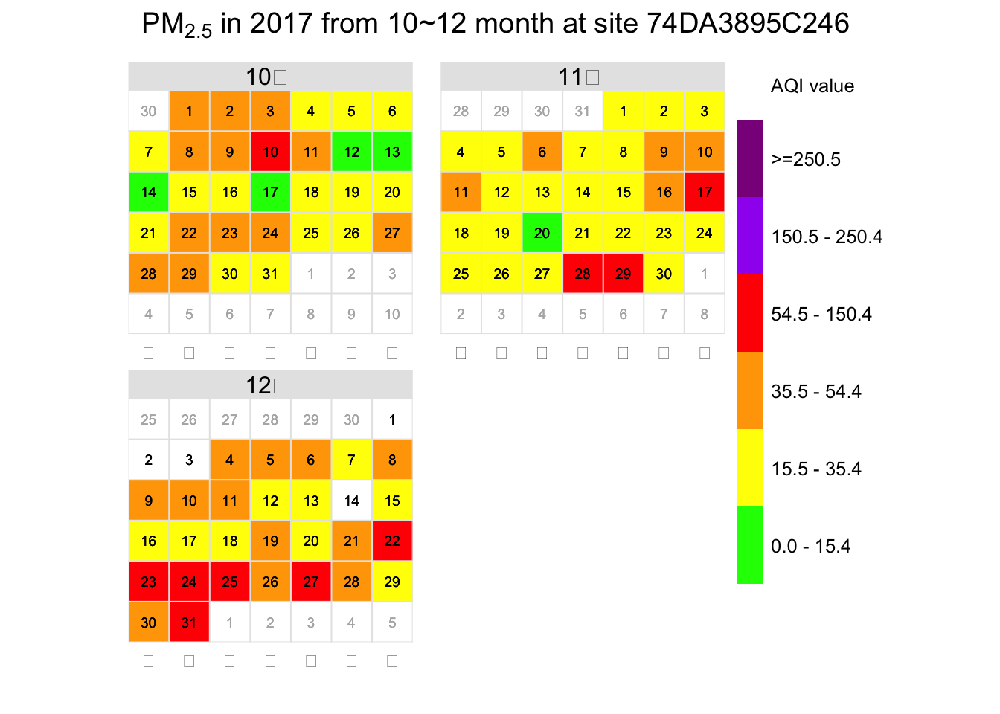
b = distin(datetable("74DA3895C2A6"))
name(b)## 良好 普通 對敏感族群不健康 對所有族群不健康 非常不健康 危害
## 10 4 19 8 0 0 0
## 11 5 19 5 1 0 0
## 12 3 19 7 2 0 0dateplot("74DA3895C2A6")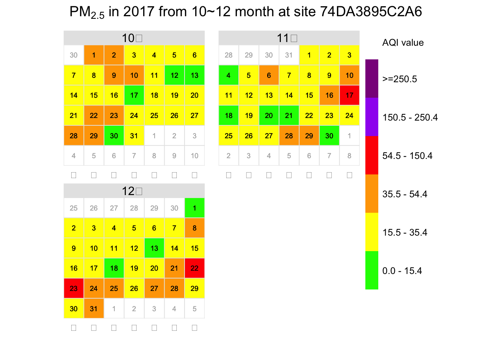
b = distin(datetable("74DA3895C374"))
name(b)## 良好 普通 對敏感族群不健康 對所有族群不健康 非常不健康 危害
## 10 7 15 8 1 0 0
## 11 7 17 5 1 0 0
## 12 6 13 8 4 0 0dateplot("74DA3895C374")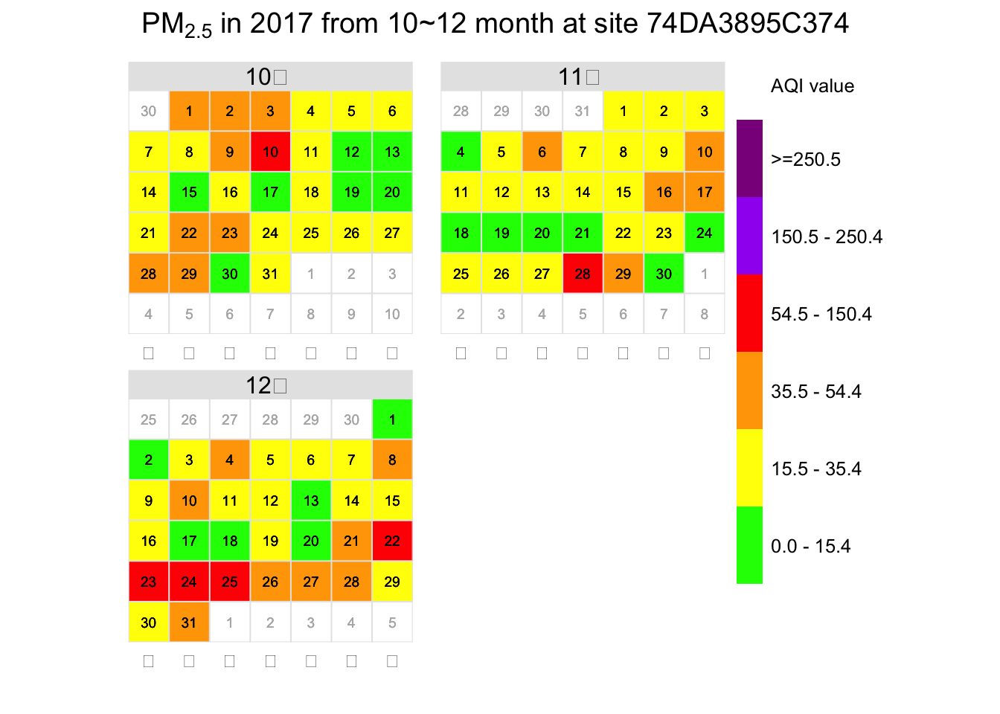
b = distin(datetable("74DA3895C500"))
name(b)## 良好 普通 對敏感族群不健康 對所有族群不健康 非常不健康 危害
## 10 5 18 7 1 0 0
## 11 5 21 4 0 0 0
## 12 3 15 11 2 0 0dateplot("74DA3895C500")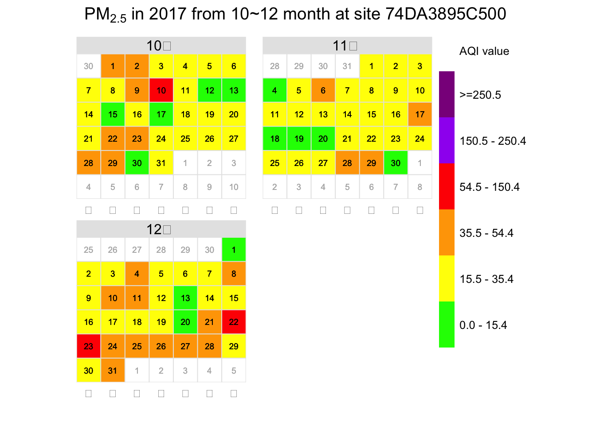
b = distin(datetable("74DA3895C24A"))
name(b)## 良好 普通 對敏感族群不健康 對所有族群不健康 非常不健康 危害
## 10 2 18 10 1 0 0
## 11 3 17 8 2 0 0
## 12 1 11 12 7 0 0dateplot("74DA3895C24A")b = distin(datetable("74DA38AF4774"))
name(b)## 良好 普通 對敏感族群不健康 對所有族群不健康 非常不健康 危害
## 10 4 19 7 1 0 0
## 11 4 20 4 2 0 0
## 12 2 14 10 5 0 0print(b)## cg cy co cr cp cb
## 1 4 19 7 1 0 0
## 2 4 20 4 2 0 0
## 3 2 14 10 5 0 0dateplot("74DA38AF4774")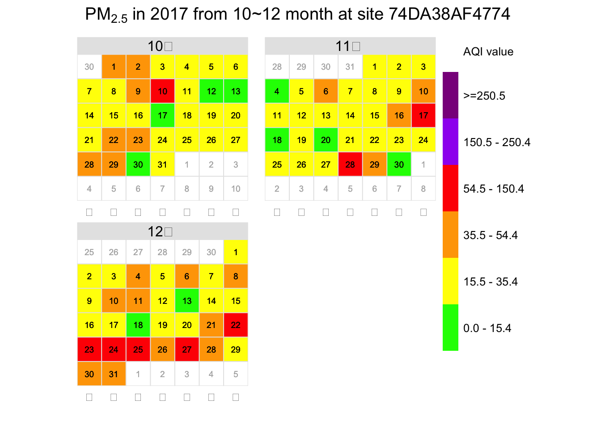
b = distin(datetable("74DA38AF4894"))
name(b)## 良好 普通 對敏感族群不健康 對所有族群不健康 非常不健康 危害
## 10 3 14 11 0 0 0
## 11 6 18 4 2 0 0
## 12 5 14 10 2 0 0dateplot("74DA38AF4894")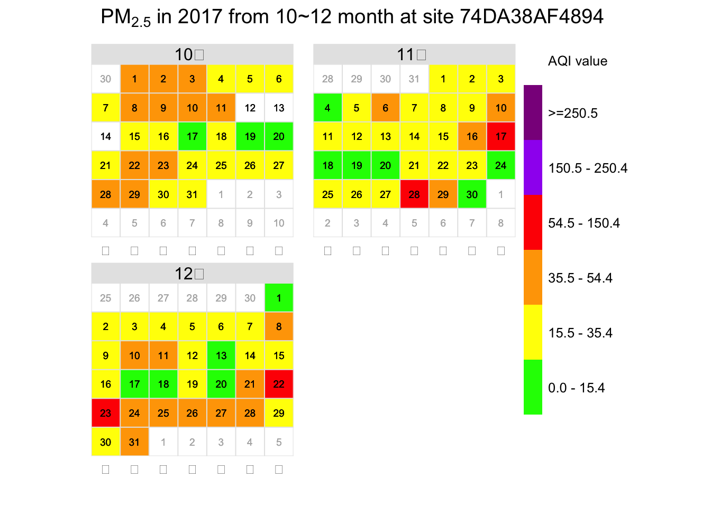
b = distin(datetable("74DA38B05240"))
name(b)## 良好 普通 對敏感族群不健康 對所有族群不健康 非常不健康 危害
## 10 5 18 6 2 0 0
## 11 4 17 4 1 0 0
## 12 3 14 8 5 0 0dateplot("74DA38B05240")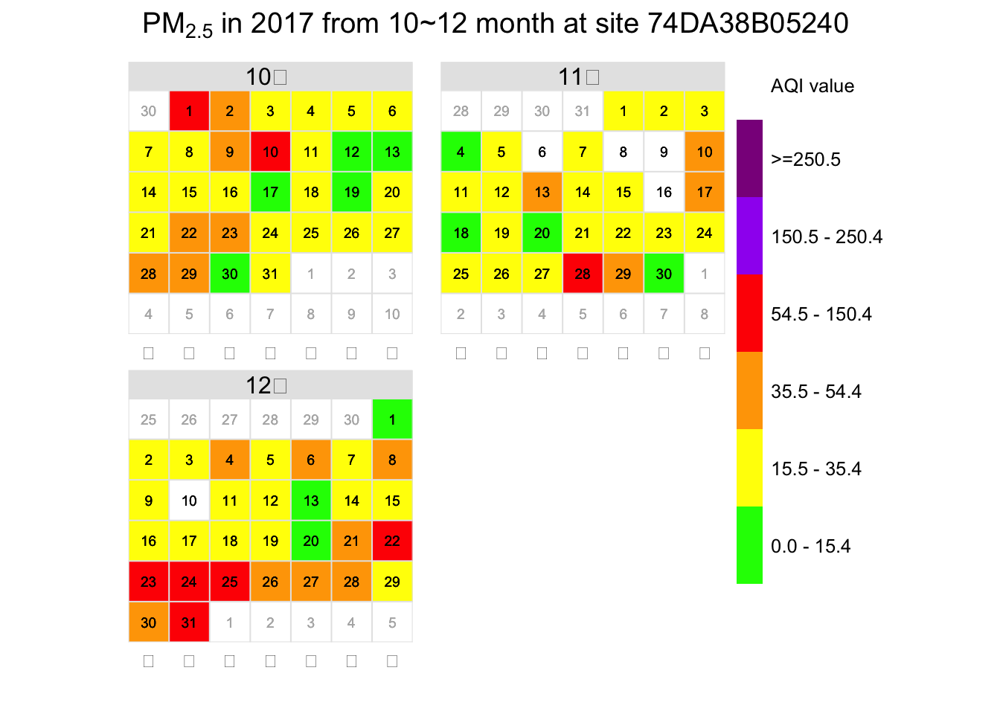
b = distin(datetable("74DA3895C2BA"))
name(b)## 良好 普通 對敏感族群不健康 對所有族群不健康 非常不健康 危害
## 10 6 16 8 1 0 0
## 11 4 20 5 1 0 0
## 12 4 15 9 3 0 0dateplot("74DA3895C2BA")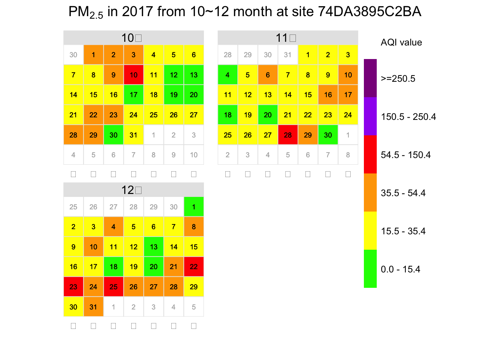
b = distin(datetable("74DA3895C2F2"))
name(b)## 良好 普通 對敏感族群不健康 對所有族群不健康 非常不健康 危害
## 10 2 18 9 2 0 0
## 11 3 20 5 2 0 0
## 12 1 12 5 5 0 0dateplot("74DA3895C2F2")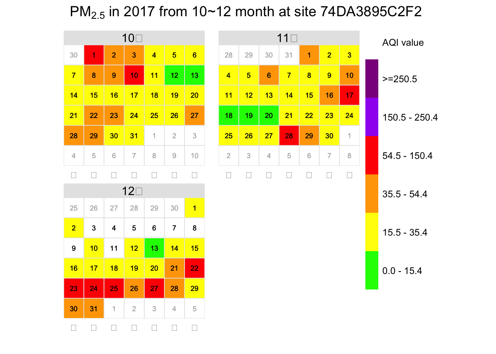
b = distin(datetable("74DA3895C3C2"))
name(b)## 良好 普通 對敏感族群不健康 對所有族群不健康 非常不健康 危害
## 10 5 15 8 1 0 0
## 11 6 17 4 0 0 0
## 12 6 14 10 1 0 0dateplot("74DA3895C3C2")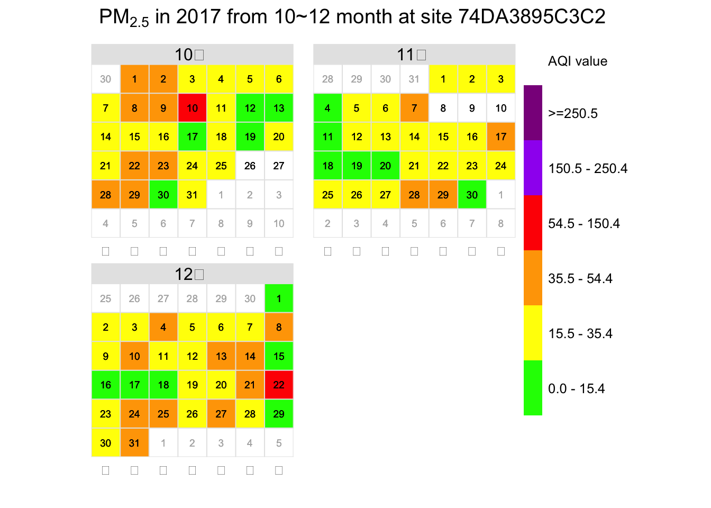
b = distin(datetable("74DA3895C3F0"))
name(b)## 良好 普通 對敏感族群不健康 對所有族群不健康 非常不健康 危害
## 10 5 16 10 0 0 0
## 11 3 21 4 2 0 0
## 12 3 14 9 5 0 0dateplot("74DA3895C3F0")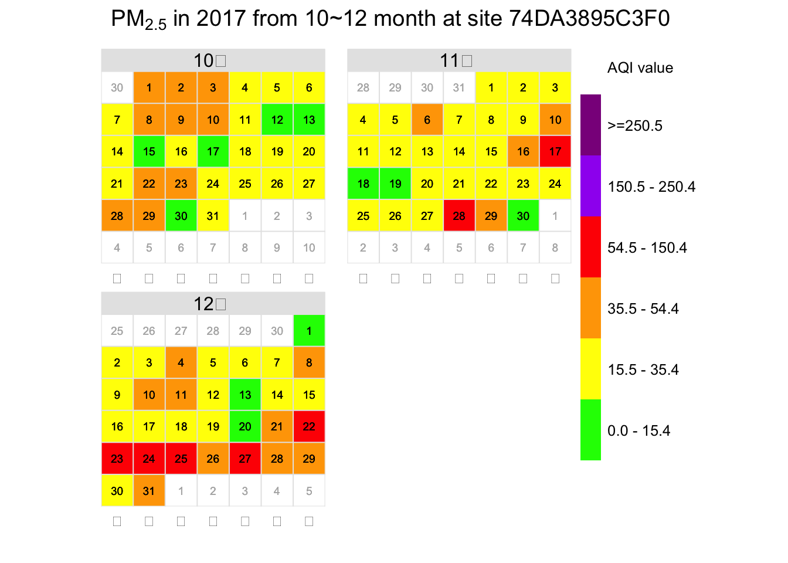
b = distin(datetable("74DA3895C4CE"))
name(b)## 良好 普通 對敏感族群不健康 對所有族群不健康 非常不健康 危害
## 10 5 18 7 1 0 0
## 11 5 17 3 1 0 0
## 12 4 15 10 2 0 0dateplot("74DA3895C4CE")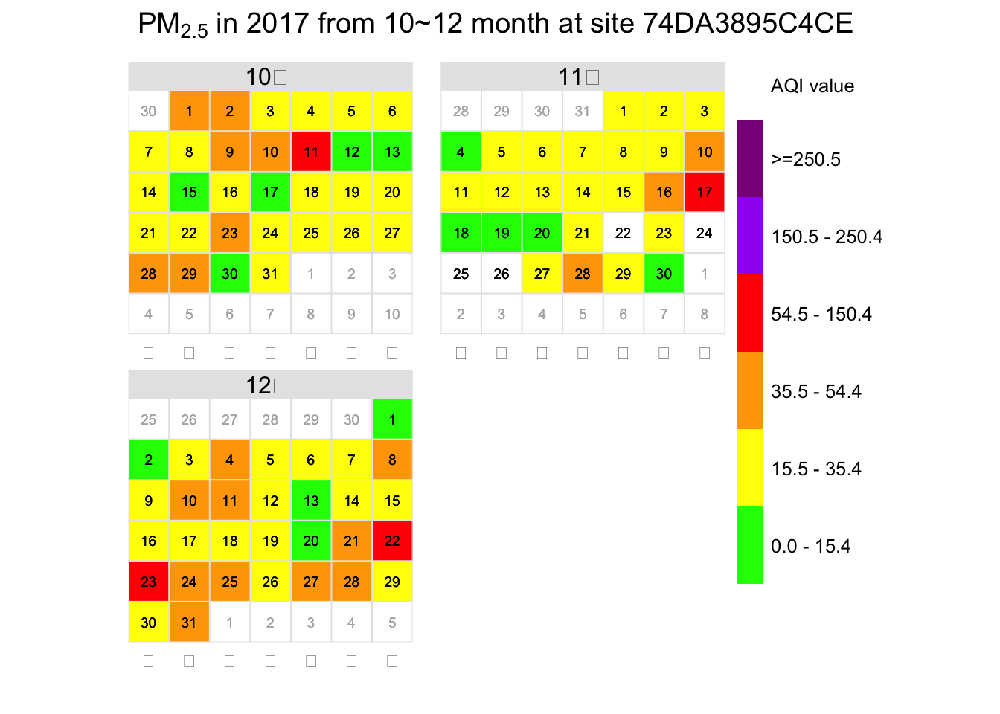
b = distin(datetable("74DA3895C5C6"))
name(b)## 良好 普通 對敏感族群不健康 對所有族群不健康 非常不健康 危害
## 10 5 14 10 0 0 0
## 11 2 20 7 1 0 0
## 12 3 12 10 6 0 0dateplot("74DA3895C5C6")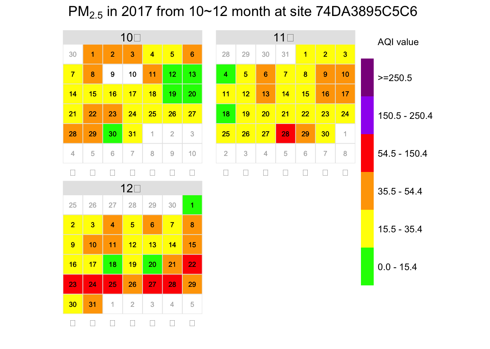
b = distin(datetable("74DA3895C53C"))
name(b)## 良好 普通 對敏感族群不健康 對所有族群不健康 非常不健康 危害
## 10 2 17 11 1 0 0
## 11 2 20 6 2 0 0
## 12 1 12 12 6 0 0dateplot("74DA3895C53C")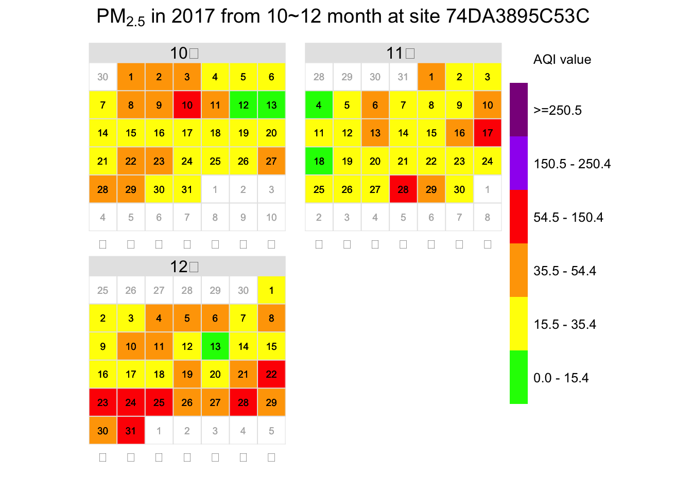
b = distin(datetable("74DA3895C324"))
name(b)## 良好 普通 對敏感族群不健康 對所有族群不健康 非常不健康 危害
## 10 5 18 7 1 0 0
## 11 6 16 7 1 0 0
## 12 4 11 7 3 0 0dateplot("74DA3895C324")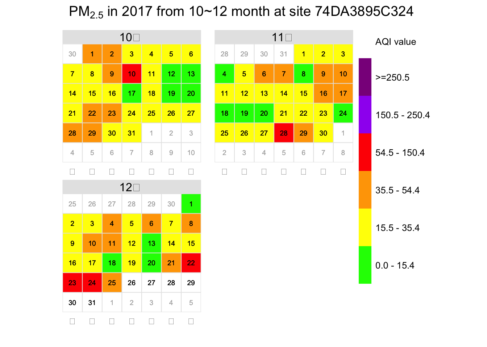
b = distin(datetable("74DA3895C396"))
name(b)## 良好 普通 對敏感族群不健康 對所有族群不健康 非常不健康 危害
## 10 4 18 8 1 0 0
## 11 5 17 6 2 0 0
## 12 5 15 6 5 0 0dateplot("74DA3895C396")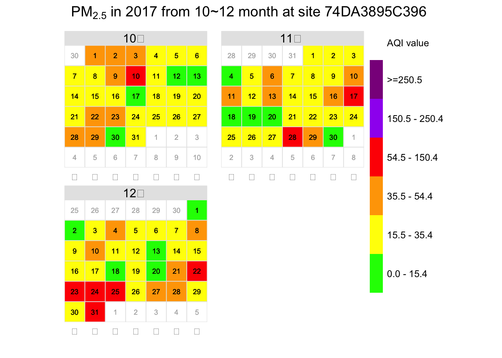
b = distin(datetable("74DA3895C454"))
name(b)## 良好 普通 對敏感族群不健康 對所有族群不健康 非常不健康 危害
## 10 0 22 9 0 0 0
## 11 1 24 3 2 0 0
## 12 1 11 12 6 0 0dateplot("74DA3895C454")b = distin(datetable("74DA3895C532"))
name(b)## 良好 普通 對敏感族群不健康 對所有族群不健康 非常不健康 危害
## 10 8 16 7 0 0 0
## 11 8 12 3 1 0 0
## 12 4 10 10 0 0 0dateplot("74DA3895C532")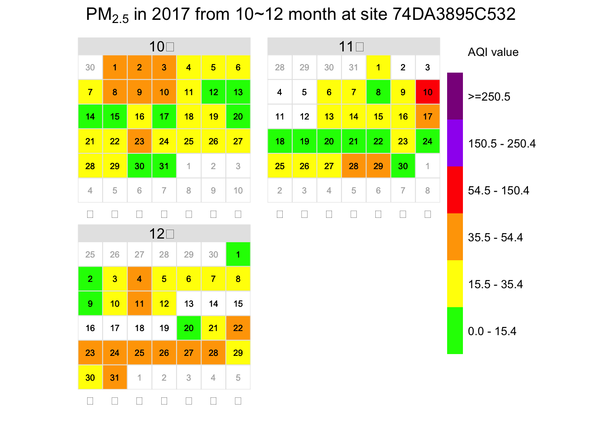
b = distin(datetable("74DA3895C568"))
name(b)## 良好 普通 對敏感族群不健康 對所有族群不健康 非常不健康 危害
## 10 7 15 9 0 0 0
## 11 6 17 5 1 0 0
## 12 4 15 9 3 0 0dateplot("74DA3895C568")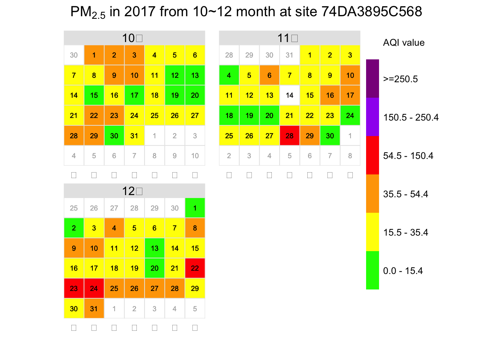
b = distin(datetable("74DA3895E0DE"))
name(b)## 良好 普通 對敏感族群不健康 對所有族群不健康 非常不健康 危害
## 10 5 17 8 1 0 0
## 11 4 19 3 1 0 0
## 12 3 11 8 2 0 0dateplot("74DA3895E0DE")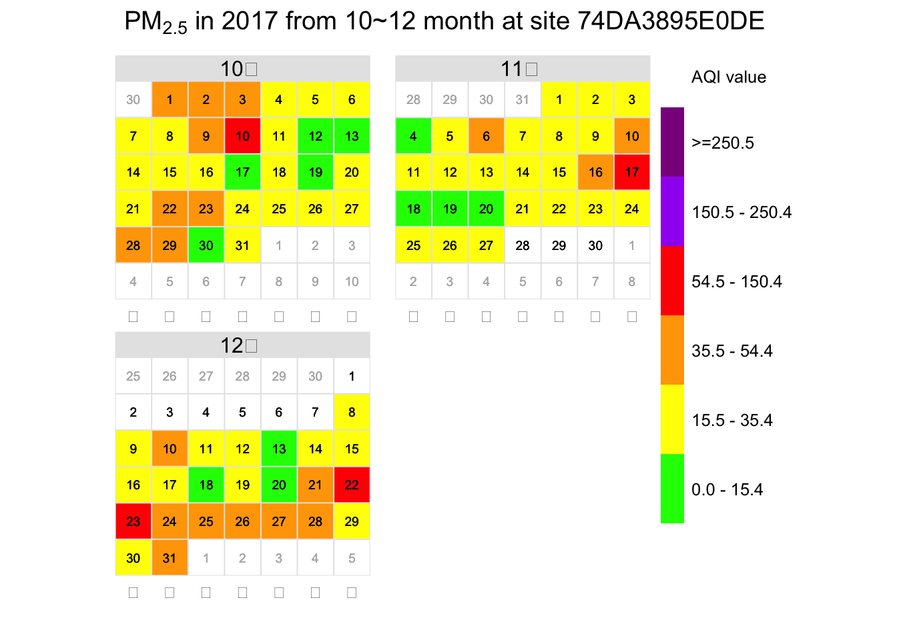
b = distin(datetable("74DA3895E0E0"))
name(b)## 良好 普通 對敏感族群不健康 對所有族群不健康 非常不健康 危害
## 10 6 16 7 1 0 0
## 11 4 20 5 1 0 0
## 12 6 13 8 4 0 0dateplot("74DA3895E0E0")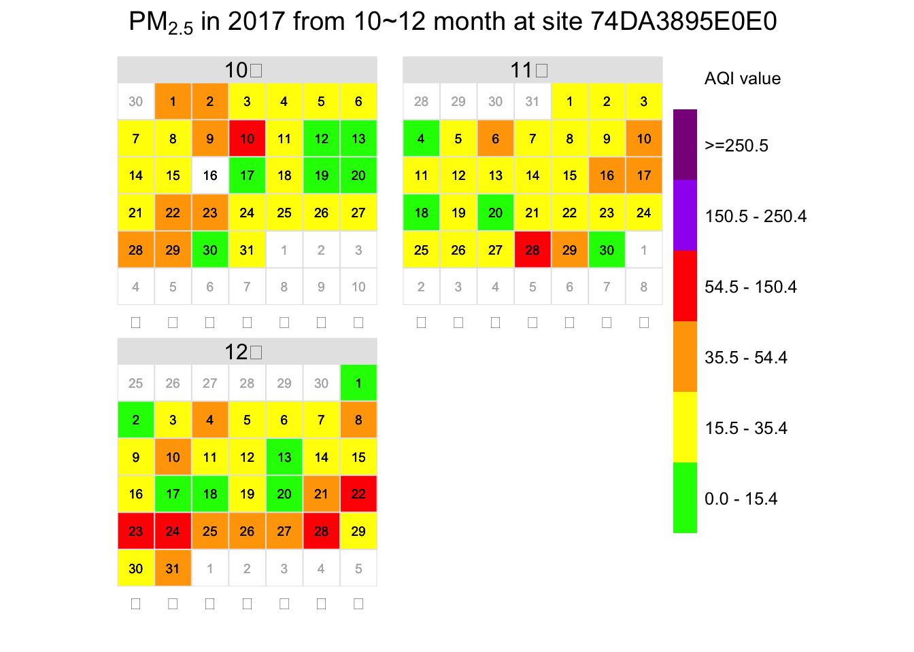
b = distin(datetable("74DA38C7CED4"))
name(b)## 良好 普通 對敏感族群不健康 對所有族群不健康 非常不健康 危害
## 10 2 20 8 1 0 0
## 11 2 18 8 2 0 0
## 12 1 9 14 7 0 0dateplot("74DA38C7CED4")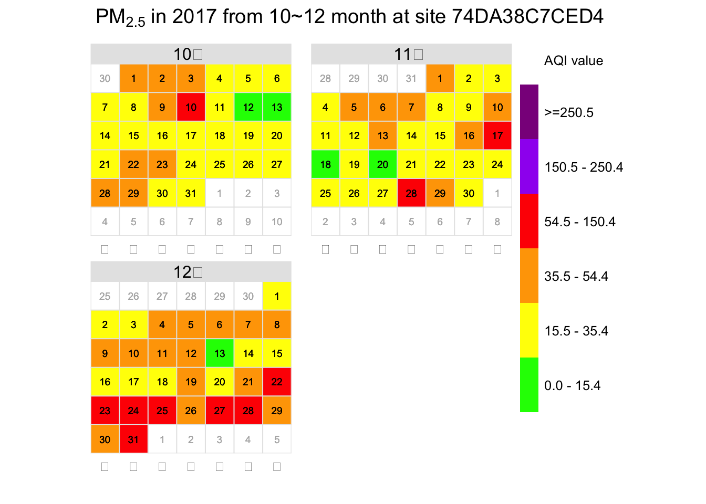
b = distin(datetable("74DA3895C262"))
name(b)## 良好 普通 對敏感族群不健康 對所有族群不健康 非常不健康 危害
## 10 5 17 6 0 0 0
## 11 7 21 1 1 0 0
## 12 7 13 9 2 0 0dateplot("74DA3895C262")